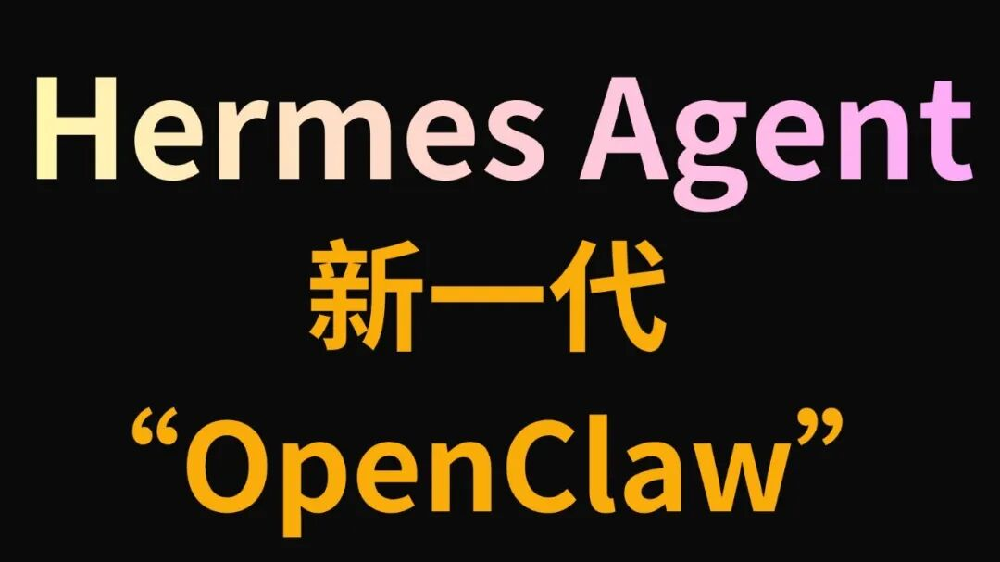

作为一名深耕AI赛道的OPC一人公司创业者，我始终在寻找一套低成本、高效率、轻量化的AI工作流。所谓OPC（One Person Company），就是单人依托AI工具链，独立完成业务研发、内容生产、知识管理、客户服务全链路闭环，不靠团队堆人力，只靠工具提效率。
过去很长一段时间，我踩遍了单人创业的AI工具坑，直到我打通Hermes Agent + NotebookLM的组合链路，我才真正明白：AI时代的单人公司，根本不需要冗余人力，只需要一套成熟的智能知识工作流。

一、OPC创业者的痛点：传统AI工作流有多鸡肋？
做单人公司，核心诉求只有三个：控成本、提效率、易维护。但此前我使用传统RAG知识库搭建方案，完全踩中所有痛点，这也是绝大多数个人创业者的通病：
Token消耗失控：RAG架构反复读取、检索、加载数据，token损耗居高不下，每月AI服务费是一笔固定无效开支，成本像漏水的水龙头持续流失；
数据同步繁琐：多设备办公、资料迁移全部依赖手动导入导出，知识库碎片化，无法统一管理；
内容生成短板：单纯大模型只能做文字问答，无法生成视频、音频、幻灯片等商用物料，创作链路断层；
提示词门槛高：需要人工优化指令、调整查询逻辑，新手极易出现检索不准确、回答冗余的问题。
对于单人创业者而言，时间就是成本、流量就是命脉。繁琐的工具操作、高昂的消耗成本、残缺的生产能力，一度让我放弃搭建私人知识库。而 win4r 维护的 notebooklm-py 开源项目，彻底改写了我的工作模式。
二、Hermes × NotebookLM：单人创业者的顶级AI外挂
这套组合的核心优势，是把Hermes作为智能操作中控，NotebookLM作为云端永久知识库，依托开源库notebooklm-py实现无缝打通。无需手动操作网页、无需复杂代码编写，全程自然语言操控，完美适配OPC单人轻量化运营模式。实测下来，四大核心功能直接颠覆我的工作流程：
1、极简操控：中文指令，全自动执行
作为单人创业者，我不想花费时间学习复杂指令代码。现在我只需在Hermes输入直白中文，即可完成所有知识库操作。例如输入指令：将这篇行业论文存入OpenClaw专属笔记本，粘贴链接后，系统自动完成上传、归类、建档。无需打开浏览器、无需手动上传，全程无感操作，资料沉淀零成本。
2、商用物料：一键生成PPT、讲解视频
单人创业最难的就是物料制作，以往一份逻辑清晰的行业PPT，我需要花费半小时以上排版整理。如今只需下达指令：提取笔记本内的配置教程，生成商用幻灯片并保存至桌面，系统自动梳理结构、填充内容、优化排版，直接导出可用PPT文件。
更具颠覆性的是AI视频生成功能，输入简单指令即可生成真人风格口播讲解视频，自带AI配音、逻辑拆解、画面排版。无需剪辑、无需配音，20分钟左右即可产出一条高质量科普/商用视频，极大降低内容创作门槛。
3、智能检索：自动优化指令，精准溯源查询
很多个人创业者存在语言表达偏差，直白的中文口语指令，往往无法让AI精准检索。而这套链路具备智能优化能力：我询问「Claude Code的plan mode怎么开启」，系统会自动将中文口语转化为精准英文检索词，溯源挖掘官方资料，整理出快捷键、命令行、配置文件等多种开启方式，信息完整度远超手动搜索。
4、云端沉淀：永久知识库，构建个人知识飞轮
依托NotebookLM云端存储能力，所有资料永久留存、多端同步，彻底告别本地文件杂乱、资料丢失、手动迁移的问题。搭配思维导图、测验题库生成功能，既能梳理行业知识框架，又能自测业务认知，实现输入、沉淀、复盘、迭代的闭环。
三、部署教程：小白也能一键完成搭建
本次集成依托开源项目 notebooklm-py（win4r分支），区别于原版仓库，该分支适配Hermes Agent、优化cookie自动刷新、修复运行bug，专门适配个人开发者轻量化使用，且完全免费开源、无额外收费。
1、安装部署（极简套娃模式）
无需手动敲复杂代码，在Hermes/Claude Code中直接输入指令：读取该开源仓库安装说明并自动部署，粘贴仓库链接，AI自动完成环境配置、依赖安装，全程自动化。
2、登录授权（两种稳妥方案）
推荐方案：浏览器Cookie直读登录，无需新建设备，规避谷歌风控，搭配自动刷新指令，永久免重复登录；
备用方案：手动导出Cookie文件转换授权，适合企业受限浏览器、设备风控场景。
整个部署流程10分钟内即可完成，零基础创业者也能轻松上手。
四、OPC单人公司适配场景：覆盖全部创业需求
我结合自身创业业务实测，整理出适配个人创业者的高频使用场景，全程单人+AI即可闭环：
应用场景 | 实操流程 | 创业价值 |
|---|---|---|
行业论文研究 | 自动检索行业论文、新建知识库、批量归档资料 | 低成本完成行业调研，把控赛道趋势 |
技术深度学习 | AI拆解技术要点、生成讲解视频、制作思维导图 | 快速吃透专业知识，降低学习成本 |
商业内容创作 | 一键生成播客、视频、PPT、信息图 | 无需外包，自主产出商用物料 |
知识复盘自测 | 自动生成题库、难易度自定义、导出测验文档 | 强化知识留存，优化业务能力 |
多端资料同步 | 云端永久存储，任意设备随时调取资料 | 打破设备限制，提升办公灵活性 |
五、深耕AI创业：为什么这套组合是OPC最优解？
在AI创业赛道摸爬多年，我始终坚信：单人公司的核心竞争力，从来不是盲目堆砌工具，而是搭建可持续迭代的知识飞轮。
过去我们的知识碎片化分散在浏览器收藏、本地文档、各类笔记软件中，资料杂乱、检索困难、无法复用。而Hermes+NotebookLM的组合，实现了资料统一沉淀、智能调用、自动生产。你输入的行业资料、学习笔记、业务方案越多，AI的适配度、精准度就越高，长期积累形成专属个人知识库壁垒，拉开与普通从业者的差距。
对比传统RAG架构，这套方案最大的优势就是极低运维成本+极低Token消耗+全品类内容生成，省去知识库维护、指令优化、物料制作的额外成本，完美契合OPC单人公司轻量化、低成本、高效率的核心需求。
六、个人感悟：AI时代，单人即是军团
很多创业者都在问：普通人怎么靠AI产生真实商业价值？我的答案始终不变：不要把AI当成临时工具，要把AI融入个人商业系统。
Hermes负责智能执行，NotebookLM负责知识沉淀，依托开源工具打通链路，无需团队、无需重资产投入，单人即可完成大企业的全流程业务。这正是AI赋予普通人的创业红利——弱化人力差距，放大思维与工具的价值。
如果你也是独立创业者、自由从业者、OPC单人公司经营者，强烈建议部署这套工作流。在这场无限游戏里，依托AI武装自己，无需依附团队，单人亦可成军，乾坤未定，你我皆是黑马。
附开源仓库地址：https://github.com/win4r/notebooklm-py
适用人群：AI创业者、独立开发者、自媒体从业者、技术研究员、所有想要搭建私人智能知识库的个人用户